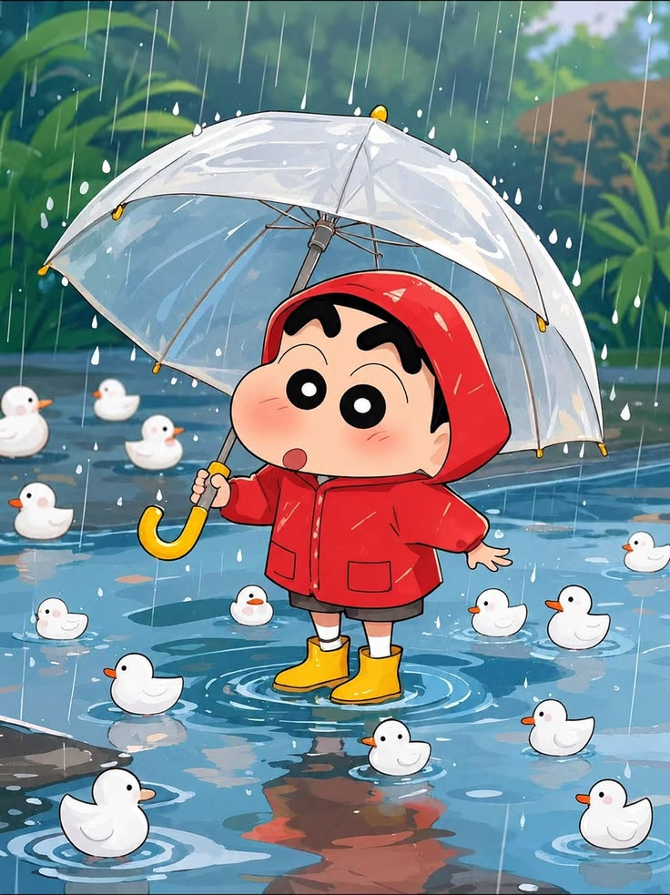

About Shinchan

Shinchan is one of my favorite cartoon characters. He is a funny and energetic five-year-old boy who always finds a way to make people laugh. His adventures with his family and friends make the show entertaining and enjoyable for viewers of all ages.
One reason I enjoy watching Shinchan is because of his playful personality and creative imagination. Even though he sometimes gets into trouble, he always brings humor to every situation. Watching Shinchan is a great way to relax and enjoy a fun story after a busy day.